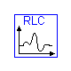
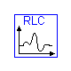
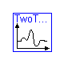
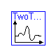

Models from Chapter 2


 

 

Information
The models in this package are taken from
Chapter 2 of:
'Introduction to Physical Modeling with Modelica'
by Michael Tiller
Modelica definition
model ComparePendulums
extends BookExamples.Icons.RunnableExample;
SimplePendulum linear(theta(start=2.3));
NonlinearPendulum nonlinear(theta(start=2.3));
end ComparePendulums;
Parameters
| Name | Default | Description |
|---|
| h | 1 | [W/(m2.K)] |
| cp | 1 | [J/(kg.K)] |
| m | 3 | [kg] |
Modelica definition
model CoolingGlass
extends BookExamples.Icons.RunnableExample;
parameter Modelica.SIunits.CoefficientOfHeatTransfer h=1;
parameter Modelica.SIunits.SpecificHeatCapacity cp=1;
parameter Modelica.SIunits.Mass m=3;
Modelica.SIunits.Temperature T(start=400);
Modelica.SIunits.Temperature T_ambient=300 + 20*time;
equation
m*cp*der(T) = -h*(T - T_ambient);
end CoolingGlass;
Parameters
| Name | Default | Description |
|---|
| dt | 1 | [s] |
Modelica definition
model FixedDelay
extends BookExamples.Icons.RunnableExample;
parameter Modelica.SIunits.Time dt=1;
Real x(start=1);
Real y(start=1);
Real z;
equation
der(x) = -z;
y = -der(y)/10.0 - 0.8*z;
z = delay(x + y, dt);
end FixedDelay;
Parameters
| Name | Default | Description |
|---|
| L | 2 | |
Modelica definition
model NonlinearPendulum
Real theta;
Real omega;
parameter Real L=2;
constant Real g=9.81;
equation
der(theta) = omega;
der(omega) = -(g/L)*Modelica.Math.sin(theta);
end NonlinearPendulum;
Parameters
| Name | Default | Description |
|---|
| R | 15 | [Ohm] |
| C | 100e-6 | [F] |
| L | 100e-3 | [H] |
Modelica definition
model RLC
extends BookExamples.Icons.RunnableExample;
parameter Modelica.SIunits.Resistance R=15;
parameter Modelica.SIunits.Capacitance C=100e-6;
parameter Modelica.SIunits.Inductance L=100e-3;
Modelica.SIunits.Voltage V_a;
Modelica.SIunits.Voltage V_b;
Modelica.SIunits.Voltage V_c;
Modelica.SIunits.Current i_V;
Modelica.SIunits.Current i_R;
Modelica.SIunits.Current i_C;
Modelica.SIunits.Current i_L;
equation
V_a = if time >= 1 then 1.0 else 0.0;
L*der(i_L) = (V_a - V_b);
R*i_R = V_b - V_c;
i_C = C*der(V_c);
i_V - i_L = 0;
i_L - i_R = 0;
i_R - i_C = 0;
end RLC;
Parameters
| Name | Default | Description |
|---|
| L | 2 | |
Modelica definition
model SimplePendulum
extends BookExamples.Icons.RunnableExample;
parameter Real L=2;
constant Real g=9.81;
Real theta;
Real omega;
equation
der(theta) = omega;
der(omega) = -(g/L)*theta;
end SimplePendulum;
Hydraulic system involving two tanks
Parameters
| Name | Default | Description |
|---|
| L | 0.1 | Pipe length [m] |
| D | 0.2 | Pipe diameter [m] |
| rho | 0.2 | Fluid density [kg/m3] |
| mu | 2e-3 | [Pa.s] |
| A1 | 1.0 | Area of left tank [m2] |
| A2 | 2.0 | Area of right tank [m2] |
| c | (pi*D^4)/(128*mu*L) | [m2/s] |
Modelica definition
model TwoTanks "Hydraulic system involving two tanks"
extends BookExamples.Icons.RunnableExample;
import Modelica.SIunits;
// Constants
constant Real pi=Modelica.Constants.pi;
constant Real g=Modelica.Constants.g_n;
// Parameters
parameter SIunits.Length L=0.1 "Pipe length";
parameter SIunits.Length D=0.2 "Pipe diameter";
parameter SIunits.Density rho=0.2 "Fluid density";
parameter SIunits.DynamicViscosity mu=2e-3;
parameter SIunits.Area A1=1.0 "Area of left tank";
parameter SIunits.Area A2=2.0 "Area of right tank";
parameter SIunits.KinematicViscosity c=(pi*D^4)/(128*mu*L);
// Variables
SIunits.Pressure P1;
SIunits.Pressure P2;
SIunits.Length H1;
SIunits.Length H2(start=2);
SIunits.VolumeFlowRate Q;
equation
// Pressure equations
P1 = rho*H1*g;
P2 = rho*H2*g;
// Flow rate
Q = c*(H1 - H2);
// Conservation of mass
A1*der(H1) = -Q;
A2*der(H2) = Q;
end TwoTanks;
HTML-documentation generated by Dymola Wed Sep 10 16:47:29 2003
.